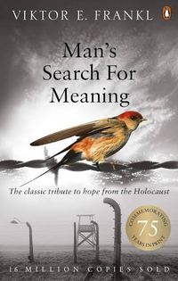

Man's Search for Meaning
Viktor E. Frankl fine read 2026
Two halves. The camp account was very engaging, the logotherapy argument much less so.

Write-up
The thesis in a sentence
A survivor's account of the camps, and then the therapy he built out of it: a person can bear almost any how if they have a why, and the why is specific to the situation each individual is in.
What I took from it
The book is in two parts, and the first one earns the second. The first is his time in the concentration camps — deported in 1942, and held across four of them: Theresienstadt, Auschwitz-Birkenau, Kaufering and Türkheim. The account runs from his arrival at Auschwitz to liberation at Türkheim, part of the Dachau complex, by which point he was one of the few prisoners still left. We see his journey through his scientific lens: embracing life by trying to see its meaning, that is, its meaning from the unique situation of each individual. He fights through the atrocities by keeping himself grounded in his bigger purpose — his unpublished work and his wife — and constantly finds strength through these. The story is emotive and graphic. He depicts camp life vividly, detailing starvation, lack of hygiene, brutal forced labour, miserable living conditions, and the constant presence of death, brutality, abuse, and the stripping of a man down to his number. That part sets the tone and the foundation of credibility for the second part, logotherapy.
Under those conditions people were stripped of their person and reduced to their truest form of being. That is his observation of the rest of the inmates, and it cuts both ways. Some rose above it by taking refuge in their mind and their moral superiority, always trying to help others, keeping a positive outlook, and protecting their dignity and their values. Others fell from grace, becoming unscrupulous and self-centred, with no consideration for anyone beyond their own survival.
The second phase he names is apathy — the numbness of the mind. To deal with the brutality, prisoners retreated back into their minds and blocked their feelings towards it, though certain triggers would still evoke a response. They dreamed of times they were outside, of food, of relatives.
His biggest realisation is that love was the strongest feeling and the strongest source of joy. He recalls thinking about his wife during an early morning march to a road site. The love part is what made me think.
Logotherapy is a form of therapy that focuses on finding each person's why to keep going and to exist. He returns to the same line several times.
He who has a why to live for can bear with almost any how. — Friedrich Nietzsche, quoted by Frankl
The turn there is more philosophical, and I liked it — specifically the focus on the why of things, because I believe it to be true. Logotherapy is the forward-facing half of the book: less retrospective and less introspective than psychoanalysis, built on what he calls the will to meaning rather than Freud's will to pleasure. The patient is not walked back through his history but confronted with, and reoriented toward, the meaning of his own life, and then held to the reasons he must keep going. Frankl argues the whole of it through a handful of cases.
The maxim underneath it is the line I keep, and he calls it the categorical imperative of logotherapy.
Live as if you were living already for the second time and as if you had acted the first time as wrongly as you are about to act now!
It asks you to treat the present as though it were already past, and the past as though it could still be amended, and that is why it works on me: it forces the question of how I actually want to live, and of what I actually hold to be right and wrong. Around it he sets the wider claim, that every life needs a meaning no matter how miserable or precarious the situation and the suffering.
Where I disagree, and where it is weak
Overall it was a nice read. The camp half was very engaging, the second part much less so, and a lot of the claims seem to be backed by just a couple of examples, which undermines them — though I haven't gone deep enough into it to have an informed opinion.
What I would actually change
Nothing that I recorded. What is in my notes is agreement — the focus on the why of things, which I already believe to be true — and the observation about love, which made me think. Neither of those is a decision to do anything differently, and I would rather leave the field as it stands than manufacture a lesson out of a book I liked.